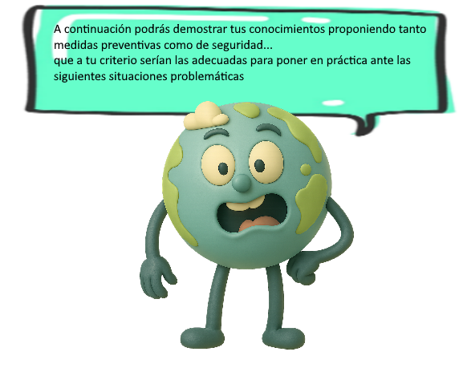
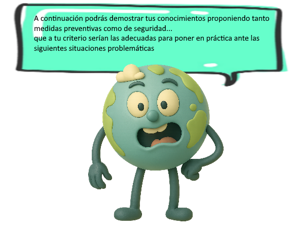

.

.
Caso para analizar:
¡Hola amigos! Soy Leo, tengo 10 años y estudio en la Escuela Sol Naciente. Hace dos semanas, mientras estábamos en clase, ¡todo empezó a temblar! Las sillas se movían, los libros caían de los estantes y todos nos asustamos mucho. Afortunadamente, nuestra profesora nos enseñó qué hacer y pudimos salir tranquilos al patio. Pero después nos dimos cuenta de que algunas cosas no estaban bien...
Reflexiona y luego escribe:
Imagina que eres parte del "Equipo de Seguridad Escolar" de tu escuela. Recientemente, hubo un pequeño temblor y ahora deben prepararse mejor. ¿Qué 3 cosas harías para que tu escuela esté más preparada para un sismo? Piensa en cómo podrían prevenirse los peligros y qué harías tú personalmente durante un temblor.
¡Muy buen trabajo! Si fueras parte del Equipo de Seguridad Escolar, aquí van otras ideas que podrías considerar para preparar mejor a tu escuela:
Durante el temblor, podrías:
¿Y sabías que en Japón los niños practican esto desde el jardín? ¡Tú también puedes ser un ejemplo de calma y preparación!
Caso para analizar:
¡Hola! Soy Luna, tengo 10 años y vivo cerca del mar. El verano pasado, mientras jugaba en la playa con mis amigos, noté algo raro: ¡el mar se alejó mucho! Pensamos que sería divertido correr hacia donde antes estaba el agua, pero mi abuelo nos gritó: "¡CORRAN HACIA LA COLINA!". No entendimos por qué, pero obedecimos. Luego supimos que era una señal de tsunami y que salvamos nuestras vidas.
Reflexiona y luego escribe:
Tu familia planea un día de playa el próximo fin de semana. Tú eres el "Experto en Seguridad del Mar" del grupo. ¿Qué 3 señales del mar te harían saber que debes correr a un lugar seguro? Explica también qué harías tú si vieras estas señales mientras estás en la playa.
¡Excelente reflexión! Como Experto en Seguridad del Mar, aquí tienes algunas señales importantes que podrías estar atento:
Si ves alguna de estas señales, tú podrías:
Recuerda: el tiempo es vida. No necesitas esperar una alarma: si el mar actúa raro, ¡muévete!
¿Y sabías que los delfines y las ballenas también huyen antes de un tsunami? ¡La naturaleza nos da pistas!
Caso para analizar:
¡Hola! Soy Tomás y vivo cerca de un volcán llamado "Montaña Dormida". Mi abuelo dice que hace mucho tiempo hizo erupción, pero ahora está tranquilo. Sin embargo, últimamente hemos notado que el suelo está más caliente en algunos lugares y que salen humitos blancos de pequeños agujeros. ¡Estamos investigando con mis amigos para saber si el volcán se está despertando!
Reflexiona y luego escribe:
Eres parte del "Club de Detectives Volcánicos" de tu escuela. Han notado algunos cambios en la Montaña Dormida. ¿Qué 3 cosas harías para avisar a tu familia y vecinos si crees que el volcán podría hacer erupción? Explica también qué harías tú si el volcán comenzara a actuar raro.
¡Qué gran trabajo como miembro del Club de Detectives Volcánicos! Aquí van algunas ideas que podrías usar si sospechas que el volcán se está despertando:
Si el volcán comienza a actuar raro, tú podrías:
Recuerda: los volcanes no explotan sin avisar. Pequeños cambios, como los que notaste, son como sus "susurros". ¡Y tú estás aprendiendo a escucharlos!
Caso para analizar:
¡Hola amigos! Soy Ana y junto con mis amigos creamos el "Club de la Escuela Segura". Hace poco tuvimos un simulacro de sismo y nos dimos cuenta de que muchos no sabían qué hacer. ¡Queremos convertir nuestra escuela en la más preparada del pueblo!
Reflexiona y luego escribe:
Tu clase ha ganado el concurso "Escuela Más Preparada". ¿Qué 3 ideas divertidas propondrías para que todos en tu escuela recuerden qué hacer durante un sismo? Piensa en cómo podrían aprender jugando y qué harías tú para ayudar a tus compañeros a estar preparados.
¡Qué creativo eres! Como ganador del concurso "Escuela Más Preparada", aquí tienes algunas ideas divertidas para que todos aprendan jugando:
Tú podrías ayudar a tus compañeros:
Recuerda: cuando el aprendizaje es divertido, ¡nadie lo olvida! Tú puedes hacer que tu escuela no solo sea segura, sino también feliz.
Obra publicada con Licencia Creative Commons Reconocimiento No comercial Compartir igual 4.0